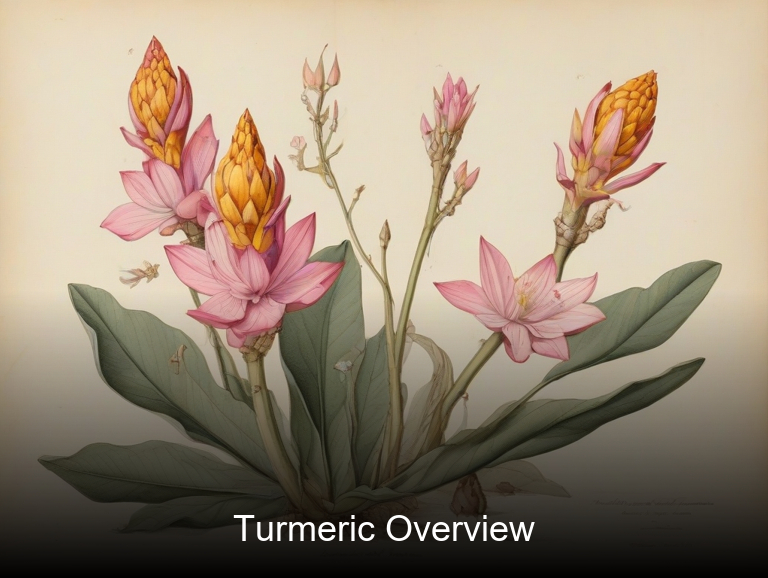
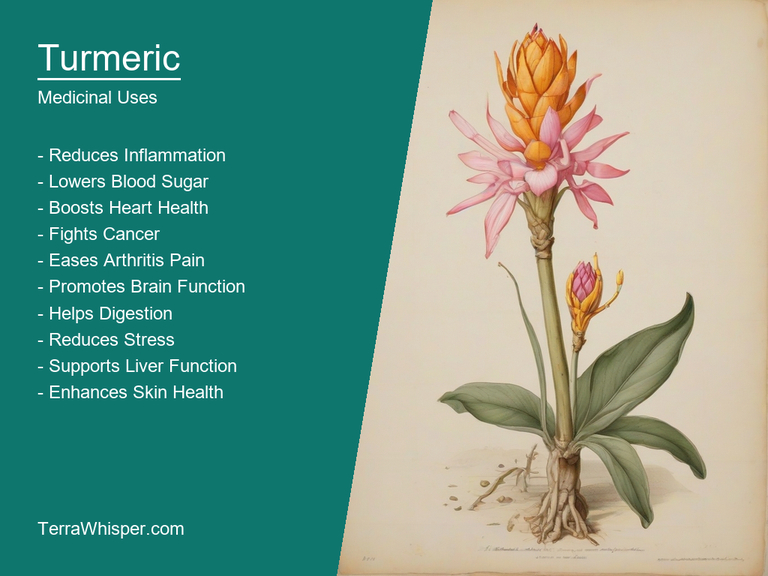
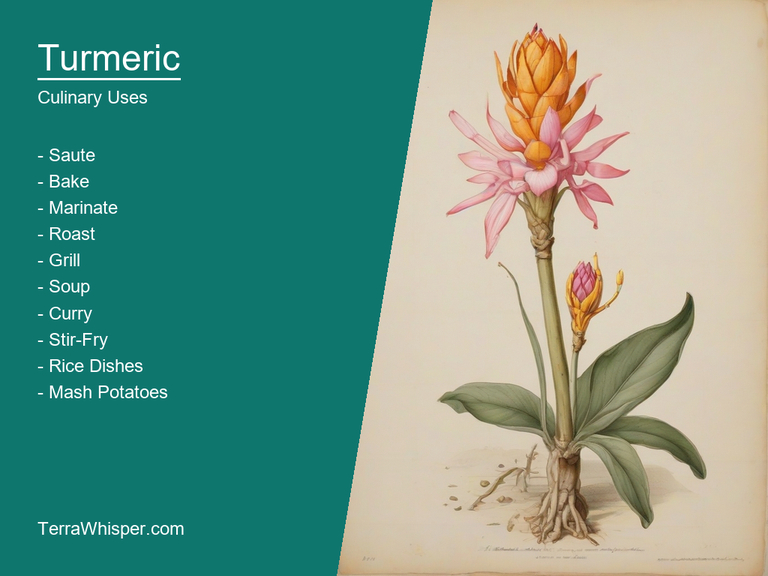
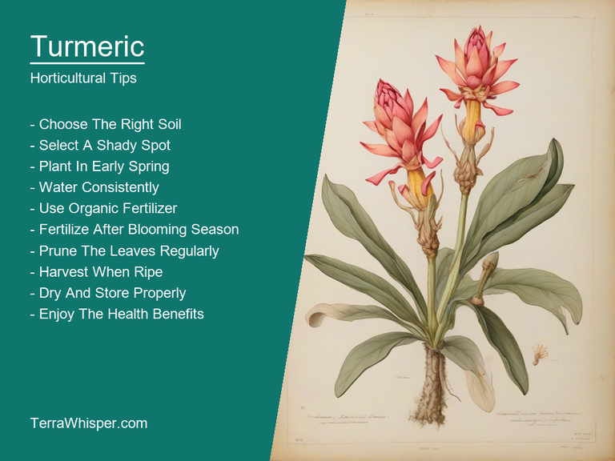
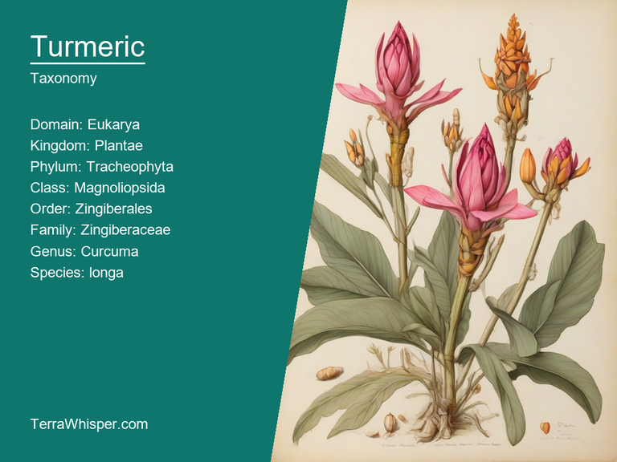
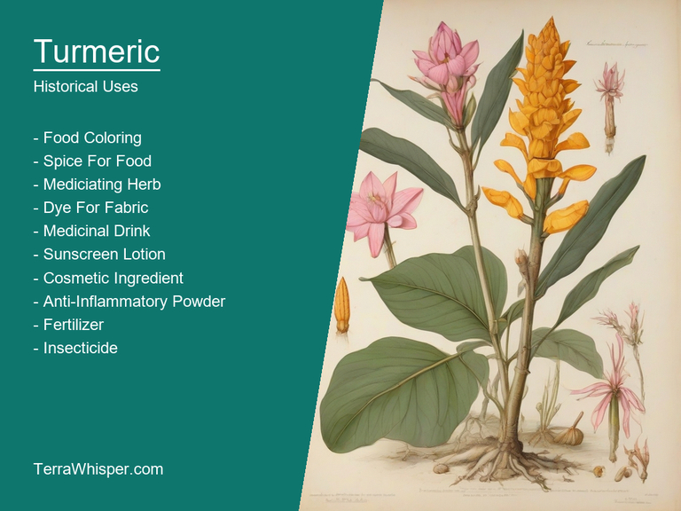

Turmeric, scientifically known as Curcuma longa, is a versatile plant with both medicinal and culinary uses. This rhizomatous herbaceous perennial plant belongs to the ginger family, Zingiberaceae. It has been widely used in traditional medicine for its anti-inflammatory properties and to treat various ailments such as arthritis and digestive problems. Besides its medicinal value, turmeric also adds a vibrant color and unique flavor to many dishes, particularly in Southeast Asian cuisine.
In addition to its culinary significance and medical applications, Curcuma longa has ornamental and horticultural uses as well. Its leaves are large and lance-shaped, growing at the top of the plant, while the flowers, which grow from the center of a stem, can be either yellow or white in color. The turmeric plant stands up to 3 feet tall and thrives in warm climates, making it an ideal choice for gardening enthusiasts who live in tropical regions. It is often cultivated for its attractive appearance as well as its practical uses.
Botanically speaking, Curcuma longa is native to Southeast Asia. Its name comes from the Sanskrit word "Haridra" meaning yellow, which refers to the plant's bright-colored compounds - principally curcumin, an organic compound responsible for turmeric's distinct hue and many of its medicinal properties. With a long history dating back centuries in India and China, turmeric has been used in traditional medicine as well as in religious rituals for healing and spiritual purposes. Throughout time, it has evolved into an essential part of various cultures due to its unique characteristics and widespread applications.
In this article, you will discover what are the medicinal and culinary uses of turmeric. Then, you'll learn how to cultivate it, what is its botanical profile, and how it was used historically.
Turmeric (Curcuma longa) has many health benefits, such as helping with arthritis, reducing inflammation, aiding in digestion and gut health improvement. Studies suggest its potential to lower cholesterol levels and minimize cancer risks. This powerful spice can even alleviate depression symptoms and improve brain function. Additionally, it has been used for centuries as a natural skin toner and wound healer due to its antibacterial properties.
The following illustration lists the most important uses of turmeric in medicine.

Turmeric's medicinal aspects come from its active constituents, such as curcuminoids, which are responsible for these powerful benefits. These curcuminoid compounds provide antioxidant effects and reduce oxidative stress within the body by regulating gene expression and signaling pathways.
The most commonly used parts of the plant to prepare medicinal preparations include the root or rhizome. Its strong aroma, bright yellow color, and bitter taste make it a distinct herb in various cuisines worldwide. Turmeric is primarily utilized as a spice in cooking, while also being incorporated into traditional medicine systems such as Ayurveda, Unani, and Chinese medicine. Medicinal preparations may involve extracting the essential oils from the root or using dried powdered rhizomes for supplements and herbal remedies.
Despite its numerous health benefits, turmeric can have potential side effects in some individuals. It is known to cause gastrointestinal issues like nausea, diarrhea, and stomach upset if consumed in excessive amounts. People with gallbladder disorders or bile duct obstructions should exercise caution when using turmeric due to its ability to stimulate the production of bile. Additionally, pregnant women are advised to consult their healthcare provider before incorporating it into their daily routine as some studies have suggested a risk for preterm births.
To avoid any complications and maximize the benefits of turmeric, certain precautions must be considered when consuming this spice. Firstly, moderation is key – consuming smaller amounts in food or taking recommended doses for supplements will minimize side effects. Secondly, it's advisable to choose reputable sources, such as organic products and high-quality supplements, to ensure the purity and quality of active components like curcuminoids. Lastly, people with specific health conditions should consult their healthcare provider before incorporating turmeric into their diet or daily routine.
Turmeric, known by its scientific name Curcuma longa, is a remarkable root crop with various culinary applications across the globe. It originated in South Asia and has been an essential ingredient in Indian cuisine for centuries. The spice has gained immense popularity as it adds a distinct yellow color and rich flavor to many dishes.
The following illustration lists the most common uses of turmeric for culinary purposes.

Turmeric's edible parts include both the rhizomes and roots. The primary rhizome is the one typically utilized as it consists of a rich concentration of the spice's active compounds, such as curcuminoids, which impart its vibrant color and characteristic flavor. It can be dried or ground to fine powder and used in a multitude of culinary applications.
When incorporating turmeric into your cooking, there are a few helpful tips to keep in mind. Firstly, use it sparingly since an excess can result in an overpowering flavor. It's best to start with a small amount and gradually increase the quantity as per taste preference. Secondly, avoid direct contact between turmeric powder and cooking oil beforehand to prevent clumping when stir-frying. Additionally, when using it as a natural food colorant, it is essential to add a pinch of salt or acidic ingredients such as vinegar to bring out the vibrant orange hue.
While turmeric has numerous health benefits, including its anti-inflammatory and antioxidant properties, some side effects can arise from excessive consumption. For instance, it may cause stomach discomfort, diarrhea, nausea or dizziness in certain individuals due to the presence of essential oils. Moreover, it has a potential risk of interacting with specific medications like blood thinners and diabetes drugs. It is, therefore, crucial to be cautious when using turmeric as a supplement and always consult a healthcare professional for any concerns.
The growth requirements of turmeric (Curcuma longa) include a tropical climate with temperatures ranging from 20°C to 35°C, high humidity levels around 70% or greater and an annual rainfall between 1,000 mm and 2,500 mm. It thrives in well-drained soils rich in organic matter, with a pH level ranging from 4.5 to 6.5. The plant prefers partial sunlight throughout its growing cycle and can be grown as a perennial or annual depending on the region's climate.
The following illustration lists the most important tips to cutlitvate turmeric.

Planting turmeric requires selecting healthy rhizomes, breaking up them apart gently and ensuring they have at least one bud or eye. The chosen rhizome should be planted in well-drained, organic rich soil around a depth of 5 cm to 10 cm (2 inches to 4 inches) with appropriate spacing between the plants according to cultivars specific needs. It is advised to plant them during monsoon season for optimum growth and to avoid transplanting during dry periods.
Caring tips include providing consistent moisture, maintaining a steady supply of nutrients through regular mulching with organic matter like cow manure, maintaining proper spacing between plants to ensure air circulation and prevent diseases, and removing weeds regularly. Also, keeping the soil pH within the recommended range ensures efficient plant uptake of essential nutrients from soil which promotes growth.
Harvesting tips entail waiting for the turmeric rhizomes to mature, usually in six months or longer, depending on the specific variety. They can be harvested when the leaves begin to wither and turn yellowish-brown. Carefully dig up the plants using a garden fork, taking care not to damage the roots; avoid tugging at the rhizome as it may break easily.
In their cultivation, Turmeric (Curcuma longa) is prone to pests and diseases which could affect its growth and yield. Some common pests include root aphids that thrive during summer or leafhoppers causing damage to leaves. Diseases like Fusarium wilt, Rhizome rot, and Curvularia leaf spot can also affect the plant's health, with early identification of symptoms crucial for successful treatment and prevention.
Turmeric, with botanical name Curcuma longa, belongs to the domain Eukaryota, kingdom Plantae, phylum Magnoliophyta, class Liliopsida, order Zingiberales, family Zingiberaceae, genus Curcuma and species longa. Common names for turmeric include curry powder, haldi, and yellow ginger.
The following illustration display the botanical profile of turmeric.

There are several variants of Curcuma longa, such as the Indian turmeric (Curcuma domestica), Chinese turmeric (Curcuma wenyujin), and Japanese turmeric (Curcuma angustifolia). These variants differ in their appearance, with Indian turmeric having more leaves while Chinese turmeric often comes in various sizes. The main distinction among the three is the origin from which they were first cultivated.
Curcuma longa is a perennial plant typically growing up to two meters tall. It has a pseudostem composed of fused leaf sheaths, with narrow, long leaves that can reach up to one meter in length. The flowers are yellow and grow on a spike in clusters at the top of the plant's flowering stalk.
Curcuma longa is native to Southeast Asia, primarily cultivated throughout India, Indonesia, China, and Sri Lanka. This turmeric variety has adapted well to tropical climates, preferring warm temperatures, high humidity, and abundant rainfall. It can be grown in both shade and direct sun with proper drainage.
Curcuma longa completes its life cycle through the growth of a rhizome that develops into an individual plant over time. The plant flowers and produces seeds, which then disperse to new locations where they may grow and establish new colonies, maintaining the species' presence in their native habitats.
The origin of Turmeric dates back to ancient times as its primary root or underground stem is known to grow extensively and rapidly from an area in Southeast Asia today identified as modern-day India, where it still plays a central role within the culinary arts for both flavoring purposes along with many cultural applications. As far regarding etymology goes Turmeric was referred by several names before we used turmerick during medieval times which eventually evolved into "Turmerica" that signifies its association to curry from India and then finally shortened down as 'turmeric'.
The following illustration lists the most well known historical uses of turmeric.

Throughout history, the cultural significance of this golden spice can't be overlooked. It has been used in various ways - one prominent way being within rituals related mainly focused around religion like Hinduism where it symbolized life after death because turmeric dye could penetrate into skin making corpse look 'golden'. Moreover, In marriage ceremonies too Turmerics were incorporated for the bride and groom as a blessing. Additionally its role in medicine was also quite prominent especially Ayurveda - an ancient practice known not just from India but across Asia which used turmeric extensively to treat various illnesses including inflammation-related ones, thereby emphasizing on both curative (Ayu) & knowledge(Veda).
Myths and legends about Turmerics have also played a role in the spices popularity throughout history. A legend suggests it first was discovered by Lord Rama of ancient Ramayana who found this golden-colored plant while searching for his wife Sita, thus naming them 'SindhuRaktas' or those giving birth to rivers and blood respectively due their bright hue resembling the sunsets at dusk. Also folklore states that when Buddha entered meditation he was shielded with a golden light by which people could only see his silhouette - turmeric spice had this power according Hindu tradition making it an essential ingredient for worship purposes as well giving further credence to its auspicious status within the culture.
Turmerics appearances have been made in literature throughout history showcasing how important a role it has played culturally and symbolically; with references being found across various works from different regions such as 'The Ramayana', written during 1st century BC which uses turmcer to cure injury while describing its medicinal properties, further indicating the spices use for both taste enhancing purposes along healing abilities. Another literary example is Shakespeare's play "Antony & Cleopatra" set around an era where Egyptians used Turmeric as a cosmetic agent on their skin giving them that characteristic 'yellow tint'.
Finally folkloric uses of turmerics are numerous and varied, ranging from everyday household chores like using it to make colorful cloth dyes or cleaning purposes where its antiseptic qualities helped keep homes spotlessly clean. Additionally in some communities people used this golden spice as an essential ingredient within remedies for treating various ailments including fever cures which showcases the importance of turmeric not just culturally but also practically throughout history making it one truly versatile herb with many uses that transcend time and space.